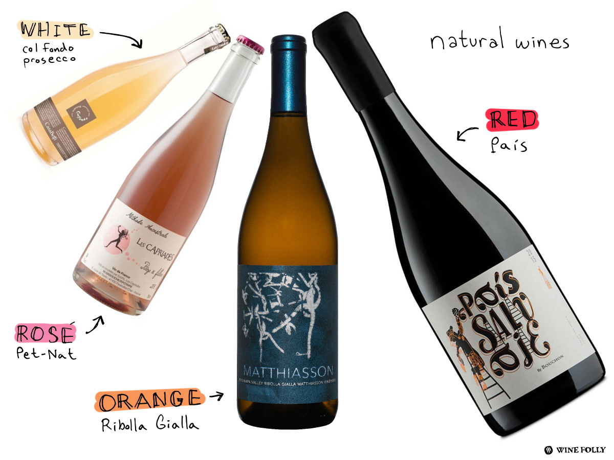

Natural Wine is farmed organically (biodynamically, using permaculture or the like) and made (or rather transformed) without adding or removing anything in the cellar.
No additives or processing aids are used, and 'intervention' in the naturally occurring fermentation process is kept to a minimum. Natural wine is more of a concept than a well-defined category with agreed-upon characteristics. In its purest form, it is wine made from unadulterated fermented grape juice and nothing else.
“PEOPLE THINK THAT NATURAL WINE IS A FAD OR A NEW THING, BUT IT’S THE TRADITIONAL WAY TO MAKE WINE. IT’S CONVENTIONAL WINE THAT’S ACTUALLY NEW.”
Many people — winemakers, distributors, writers, sommeliers — take issue with the term “natural wine.” Some prefer the phrase “low-intervention” wine, or “naked” wine, or “raw” wine. Scruggs calls her product “just fucking fermented juice.” But “natural wine” is the term that is most widely used, and anyone at a natural-inclined wine store, wine bar, or restaurant will know what you mean when you use it.